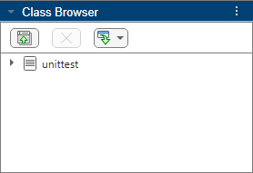
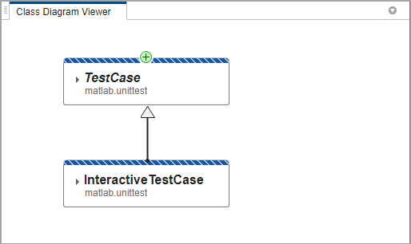
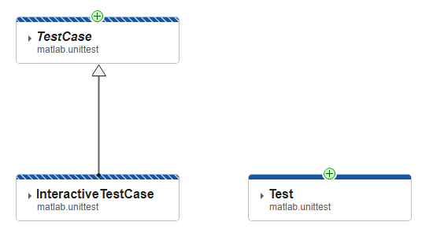
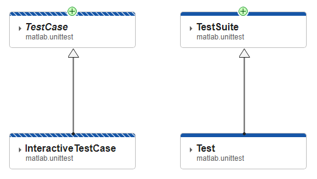
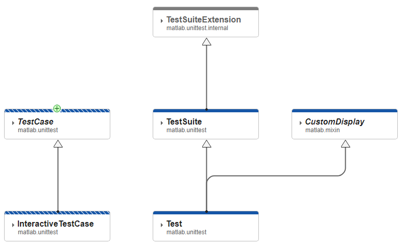
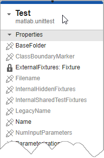
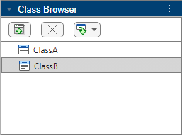
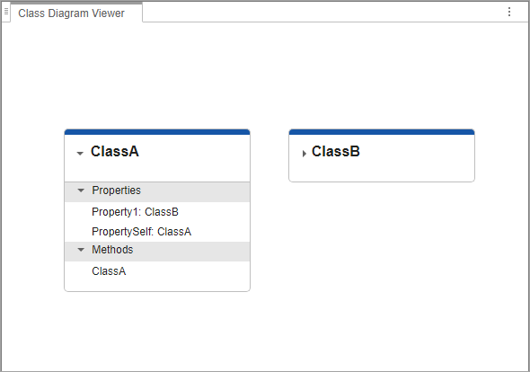
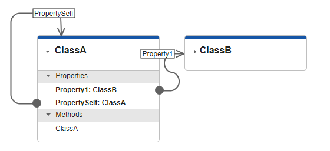

Class Diagram Viewer
Description
The Class Diagram Viewer app enables you to create diagrams that show class implementation details and hierarchies. You can use this app to explore class structures and share class diagrams with others. These diagrams can include details about:
The internal structure of classes, including properties and methods and their access attributes
The hierarchy of classes, including namespaces, with inheritance relationships
You can create class diagrams using the graphical interface or the command-line API
defined by matlab.diagram.ClassViewer.
Open the Class Diagram Viewer
MATLAB® Toolstrip: On the Apps tab, under MATLAB, click the app icon.
MATLAB command prompt: Enter
matlab.diagram.ClassViewer.
Examples
Open the Class Diagram Viewer. In the Class Browser
pane, expand the import button and select Import Namespace.
Enter matlab.unittest as the namespace and click
OK. The folder for unittest appears in the
Class Browser.

Expand the unittest folder and select the
InteractiveTestCase class. Click the Add button in
the toolstrip to add a card for the class to the Class Diagram
Viewer canvas. Add the TestCase class using the same method.
Because TestCase is the superclass of InteractiveTestCase,
Class Diagram Viewer automatically draws an arrow from
InteractiveTestCase to TestCase to show this
relationship.

The striped blue borders at the top of the class cards indicate that both of these classes are handle classes. The Legend pane describes what the graphic effects and icons on the canvas represent.

You can also drag items from the Class Browser directly to the
canvas. Drag the Test class to the viewer. The at the top of the card indicates that
Test has a viewable superclass.

Click the to add the superclass to the diagram. The arrow
pointing to TestSuite from Test indicates that
TestSuite is a superclass of Test.

In addition to moving the classes in the viewer by dragging and dropping, you can customize the view using the options in the Zoom and Pan section of the toolstrip, including:
Zoom in and out
Fit the diagram to the current screen size
Pan
In the View section of the toolstrip, select the Mixins check box. This action does not automatically add mixin classes to the diagram, but going forward, the viewer adds them to the display when you perform any action that adds superclasses.
To add all the superclasses of Test, right-click the
Test class card and select Add All Superclasses.
The CustomDisplay mixin now appears as a superclass of
Test, and TestSuiteExtension appears as a superclass of
TestSuite. The name of CustomDisplay is italicized,
indicating that it is an abstract class.

You have two options each for adding superclasses and subclasses:
Add Superclasses: Add superclasses that the given class inherits directly from.
Add All Superclasses: Add all superclasses that the given class inherits directly or indirectly from. In the example above,
Testindirectly inherits fromTestSuiteExpansion.Add Subclasses: Add known subclasses that inherit directly from the given class.
Add All Subclasses: Add all known subclasses that inherit directly or indirectly from the given class.
Note
MATLAB might not identify all existing subclasses of a given class. In that case, use the Class Browser to add any additional subclasses manually.
In addition to displaying class hierarchies, you can also explore the class
definitions themselves. Expand the Test class card by clicking the arrow
next to the class name in its card. The class card expands to show the properties and
methods defined by the class. Properties and methods inherited from superclasses do not
appear in the subclass cards.
The icons next to the property and method names identify the access levels of the
properties and methods. For example, the lock icon shows that
ExternalFixtures is a private property.

Selecting a property or method on the class card also displays access and other information in the Inspector pane.
To view the source code of one or more classes, select their cards and click Go To Source in the toolstrip. The source code files open in the MATLAB Editor.
To save or share your diagram, use one of two options:
Click Export to save the diagram as a static image.
Select Save > Save as to create an MLDATX file that can be reopened in a Class Diagram Viewer instance and edited.
Since R2024a
The Class Diagram Viewer can show associations between classes. When the type of a class property is explicitly defined as another class using class validation, the Class Diagram Viewer can show this association.
Save these two classes to your MATLAB path.
classdef ClassA properties Property1 ClassB PropertySelf ClassA end end
classdef ClassB properties Property1 double end end
Open the Class Diagram Viewer. In the Class Browser
pane, expand the Import Class, Namespace, or Folder button and select Import Class.
Enter ClassA and click OK. Repeat this step
for ClassB. Both classes appear in the Class
Browser.

Drag ClassA and ClassB from the Class
Browser to the canvas. Expand the ClassA class card by
clicking the arrow next to the class name in its card. The class card expands to show
the properties and methods defined by the class.

In the View section of the toolstrip, select the Associations check box. This action adds arrows to the diagram for any identifiable associations. In this case:
Property1ofClassAis of typeClassB, so an arrow connectsProperty1to the class card forClassB.PropertySelfofClassAis of typeClassA, so an arrow connects that property back to the main card forClassA.

The arrows can be toggled on and off using the Associations check box. The arrows also appear even if the class cards are collapsed.
The Class Diagram Viewer can only identify associations when properties are defined
using class validation. When defined this way, the class of the property is shown on the
class card. For more information, see Property Class Validation.
Also, turning on associations only shows connections between classes that are currently
in the diagram. For example, if ClassB was not in the diagram, the app
would not automatically add it to show the association with
Property1 of ClassA.
Programmatic Use
Tips
Class Diagram Viewers are instances of the
matlab.diagram.ClassViewerclass. Use the class constructors to open more than one viewer at a time.When appears on an arrow between two classes, rather than on a class card itself, there are additional classes in the hierarchy between the two connected classes. Click to add all of the viewable classes in that part of the hierarchy.
If you make changes to the class code while using the Class Diagram Viewer, you can automatically update the diagram by clicking Refresh. If a class file is deleted or becomes unavailable to the app, the app indicates the class is out of sync, but the class card itself is not removed from the diagram.